OpenCV
相關應用教學
介紹
用來處理圖像視覺的函式庫 OpenCV用C++語言編寫，支援Python, Java安裝模組(windows)
使用cmd或gitbash輸入指令進行模組安裝pip install opencv-python 基本畫圖
新增空白畫布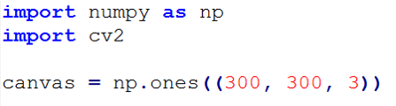
基本畫圖(直線)
直線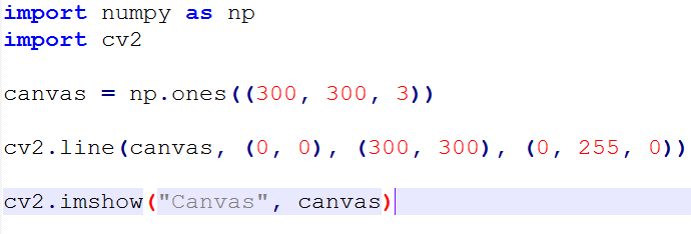
基本畫圖(正方形)
正方形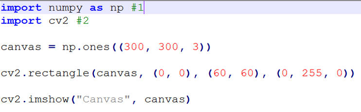
基本畫圖(圓形)
圓形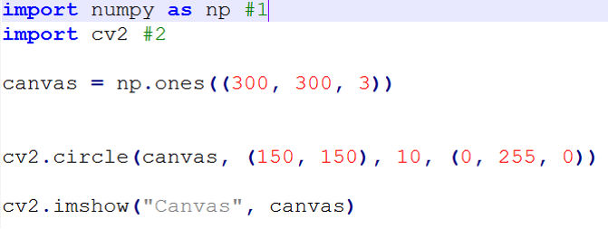
讀取圖片
讀取圖片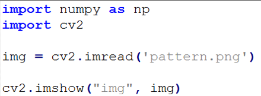
讀取圖片(灰階)
灰階轉換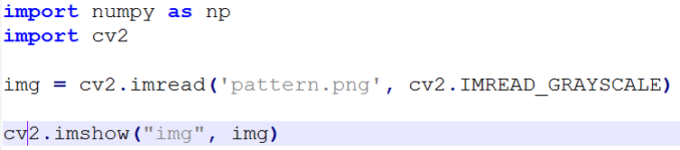
讀取圖片(大小)
取得照片大小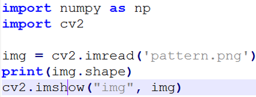
讀取圖片(儲存)
儲存照片讀取影像(webcam)
讀取鏡頭影像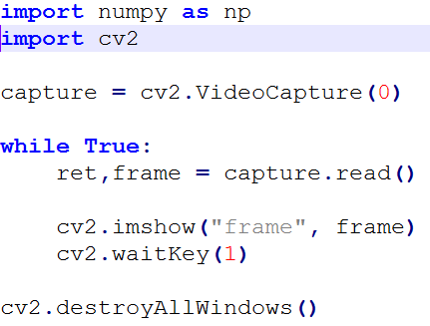
讀取影像並儲存(webcam)
儲存鏡頭影像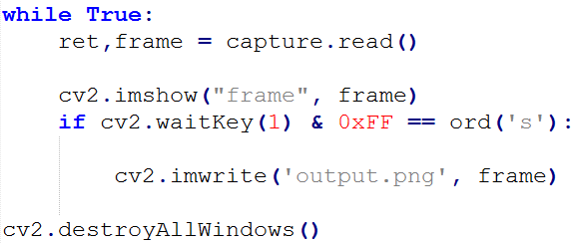
讀取影像並新增文字(webcam)
在影像上新增文字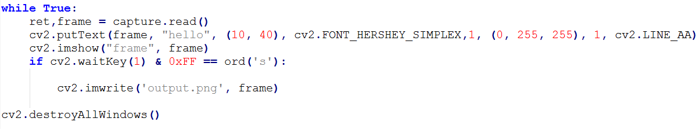
影像顏色提取
透過cv2 inrange函式進行顏色提取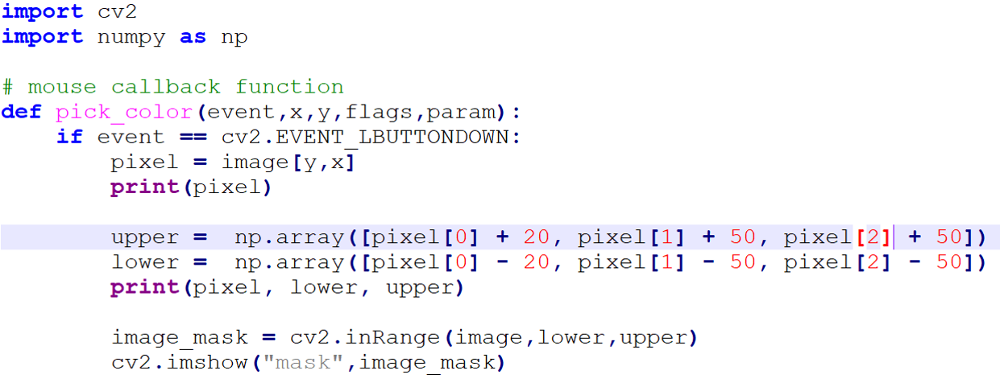
透過cv2 inrange函式進行顏色提取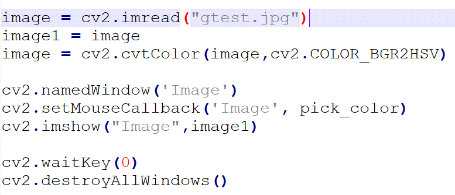
讀取照片並轉換為HSV格式影像顏色偵測並標記
透過函式進行顏色偵測並標記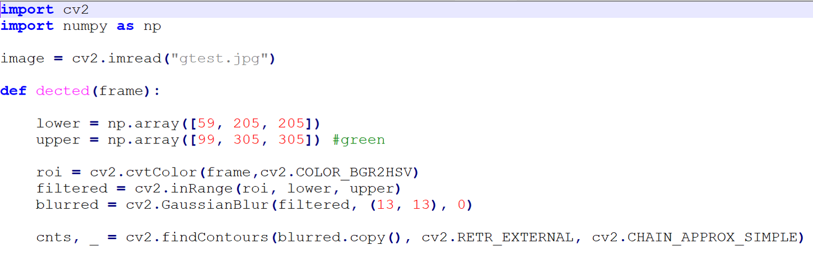
將顏色提取後的數值輸入陣列內並透過高斯模糊及findContours函式將該顏色區域找出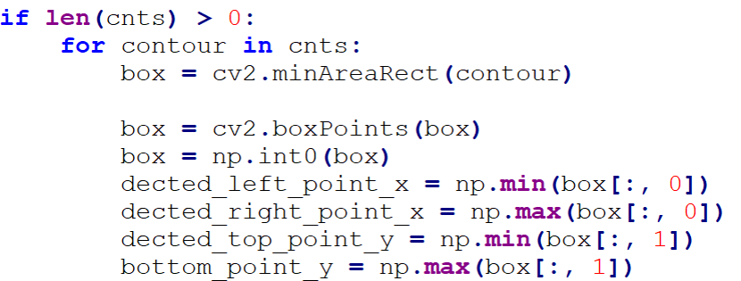
分析findContours並解析座標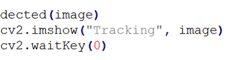
顯示結果